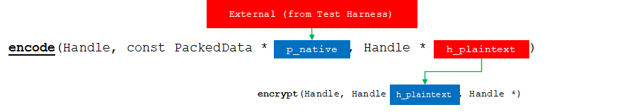
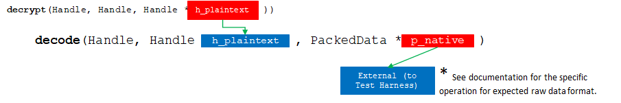
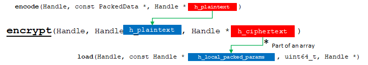
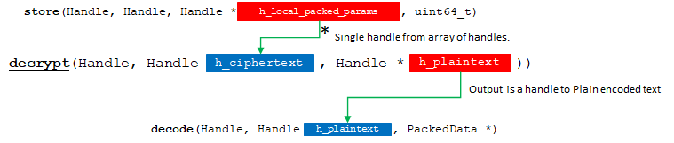
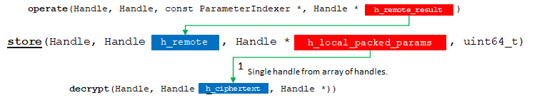
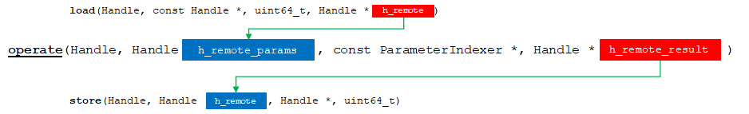

Table of Contents
High-level design and architecture overview
The API Bridge is the common interface that backends need to expose. It consists of a set of C headers that declare the C API which is used by the test harness to execute workloads implemented by backends.
Backends are expected to implement all the functions defined in the API Bridge. While it has been designed to offer flexibility, the C API can lead to a good amount of boilerplate code. The C++ wrapper is an alternative provided as a shurtcut, intended to hide many required details.
This page provides details on the design and internal implementation of the API. In addition it provides additional information for the key functions that backends are required to impliment as part of the C API Bridge.
API Bridge Versioning General Guidelines
When creating a backend, users must be mindful of the version of API Bridge being used for compatibility purposes. In general, a backend should be able to use any version of API Bridge that is backwards compatible with the required major and minor.
Not backwards compatible:
major: Reflects major changes in syntax or drastic changes in semantics. Reserved for new API version.minor: Reflects changes on semantics and/or minor syntax changes.
Backwards compatible:
revision: Reflects changes that do not affect overall existing functionality, including additions, extensions, optimizations, bug fixes, etc.build: Reflects the build type, such as development, debug, release, versioned release, different compilation flags, etc. It should not represent any changes to the API Bridge interface.
API Bridge version is stored in the VERSION file at the root of the API Bridge repository in the following format:
and it is to be interpreted as v.<major>.<minor>.<revision>-<build>. During CMake processing, file hebench/api_bridge/version.h is generated containing the definition for the corresponding version constants as follows:
A backend can use these constants to determine the API Bridge version in use.
Namespace
- Complete reference to API Bridge: hebench::APIBridge
API Bridge Function Details
Communication between the Test Harness and a backend occurs through opaque handles as defined by hebench::APIBridge::Handle. A backend will store information it requires in an opaque handle and returns it to the Test Harness via the API Bridge. The Test Harness will use the corresponding handle when requesting backend to operate on it. These handles expose a tag field that backends can use to identify the content of the handle at run-time.
The API Bridge defines the following set of functions for the main pipeline flow which backends are required to implement. For the complete function pipeline flow, see API Bridge Function Pipeline Chart .
Note that there are other required functions that deal with initialization, termination, cleanup, error handling, and polling of the backend. See the complete reference for full details.
| Function | Short description |
|---|---|
| Encode |  Given a pack of parameters in raw, native data format, encodes them into plain text suitable for backend encryption or operation. |
| Decode |  Decodes plaintext data into the appropriate raw, native format. |
| Encrypt |  Encrypts a plain text into a cipher text. |
| Decrypt |  Decrypts a cipher text into corresponding plain text. |
| Load |  |
| Store |  Retrieves the specified data from the backend. |
| Operate |  Performs the workload operation of the benchmark. |